四千六百公里，
每一刻都算数。
2025 年 7 月，开着一辆租来的 2024 款黑色后驱特斯拉 Model Y，从成都出发，沿 G318 一路向西进藏，再绕道藏北、循 G317 东返，二十一天后重新回到成都。
有人问这趟路最难忘的是哪一刻，其实答不出来——因为每一刻都滚烫。高反里发胀的太阳穴、碎石打得底盘作响的烂路、山崖上随时可能滚落的碎石、半小时换三副面孔的高原天，还有那些像直接架进云层里的盘山公路。每一公里都在逼近极限，也都在把人彻底点燃。这十二帧底片不是风景清单，是我走过那四千六百公里的证据。
- Date
- 2025.07.09 — 07.29（21 天）
- Vehicle
- 2024 Tesla Model Y 后驱版 · 黑
- Frames
- 12
- Route
- 成都（大邑）→ G318 进藏 → 拉萨 → 纳木错 → 布加 → 色达 → 汶川 → 成都（约 4,684 km）
G318 WESTBOUND · JULY 12–14
高烧之后，雪山撞进视野
正下午白刃般的紫外线，雅江一晚低烧过后，理塘大弯道后面突然扑过来的蓝色雪山。
正下午最暖和的时分，高原的紫外线白花花地砸下来，在地面几乎睁不开眼。把无人机升上高空，才终于直视了这片草原、寺庙与远处的雪峰。
刚上高原那两天，世界是干烈而灼人的。走到雅江，高烧猝不及防地砸了下来，只能临时打乱计划多停休整一天。第二天带着未退的低烧继续向西、翻过理塘，窗外忽地像被谁换了一套色调：此前满眼赤黄红土的高原渐渐低下去，雪山、河流与深绿湛蓝的草甸扑面而来；巨大云团在头顶翻腾着斜扫阵雨，丁达尔光随着云影在山坡上明暗交替。
直到转过一个大弯道，姊妹湖连同身后几十上百公里外的雪山，毫无预警地撞进视野。那一刻，一路扛过来的疲惫与低烧，全被这片开阔震得鸦雀无声。
转过那个大弯道，姊妹湖连同身后的雪山，就那样轰然撞进视野。
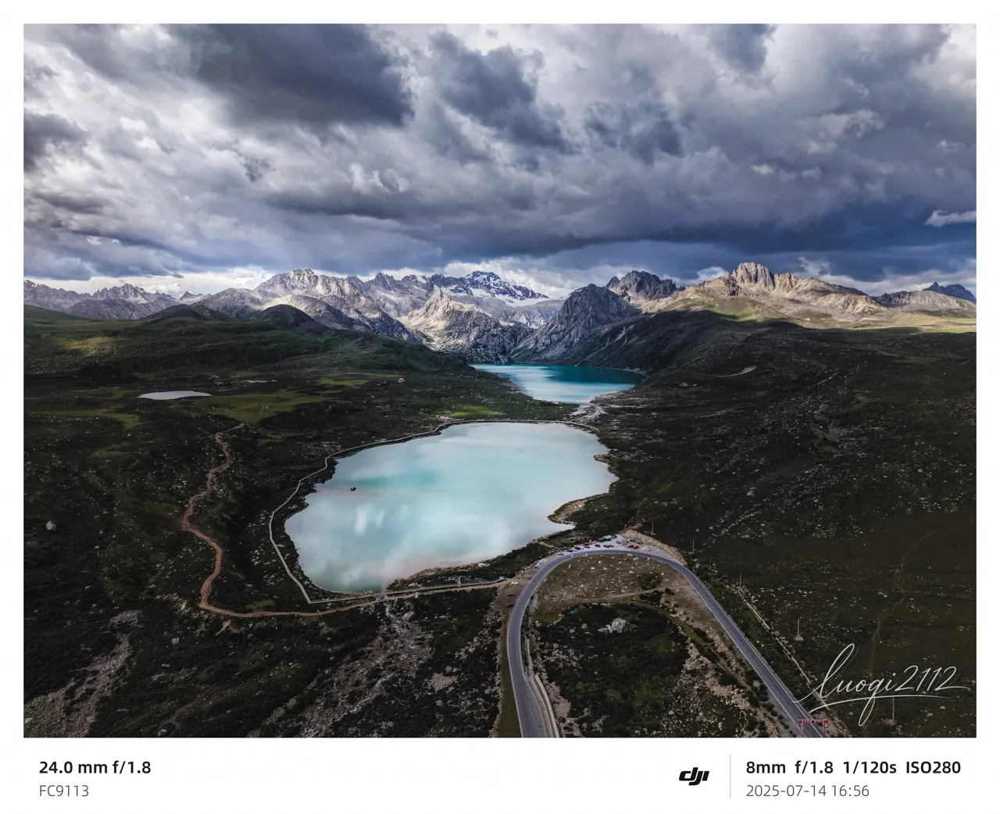
带着低烧翻过理塘，翻腾的雨云间漏下一道道丁达尔光，雪山与湖泊在明暗之间交替闪亮。
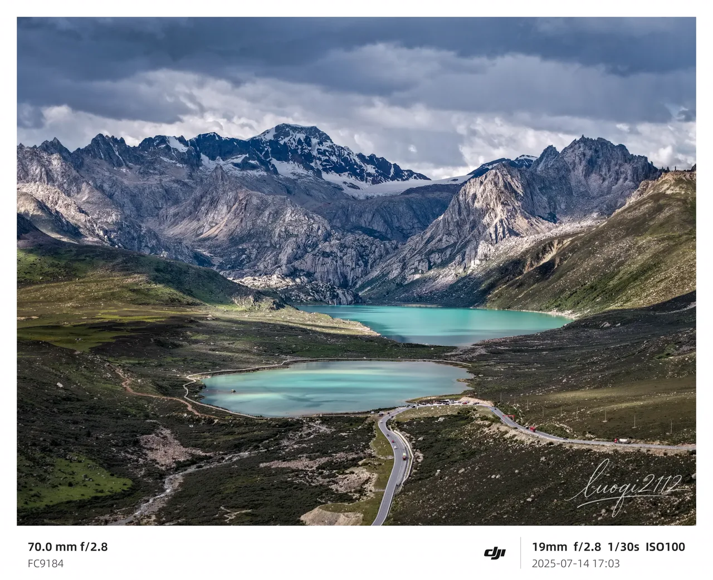
大弯道之后猝不及防的相逢。站在风里往下看，觉得一路扛过来的高烧与颠簸，全都值了。
LHASA · JULY 18–19
暗夜尽头的盛大游行
林拉高速前段没有一盏路灯；直到穿过“拉萨门”的那一瞬，漫城灯火骤然夹道亮起。
从林芝一路开向拉萨，前段的林拉高速没有路灯，车灯劈开漫长的漆黑，只管笔直往前扎进去。直到最后一段，高速不再绕行，直接一头插进拉萨城中心——车流缓缓慢下来，过收费站，穿过“拉萨门”的那一瞬间，身后绵延几十公里的黑暗骤然退场。
道路两侧猛地亮起连片的灯火，璀璨得几乎让人屏住呼吸，两排灯光夹道铺开，引着车一步步驶进拉萨城里，像一场盛大的游行。那是川藏大环线的中点，一整天的精疲力竭在瞬间烧成近乎胜利进军般的兴奋与征服感——终于开到了拉萨。
穿出黑暗、驶过拉萨门的那一刻，满城灯火夹道亮起，像一场盛大的游行。
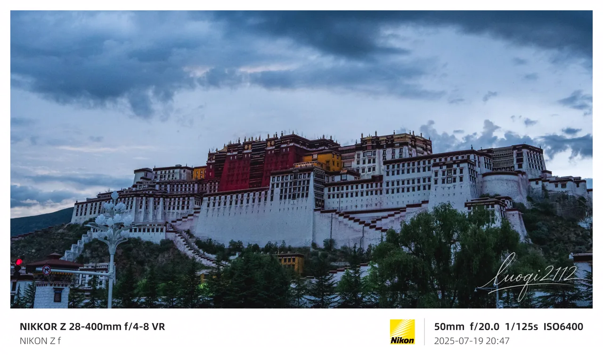
晚上八点四十七分，高原的夏夜来得迟，红白宫墙在最后一寸天光里沉静矗立。
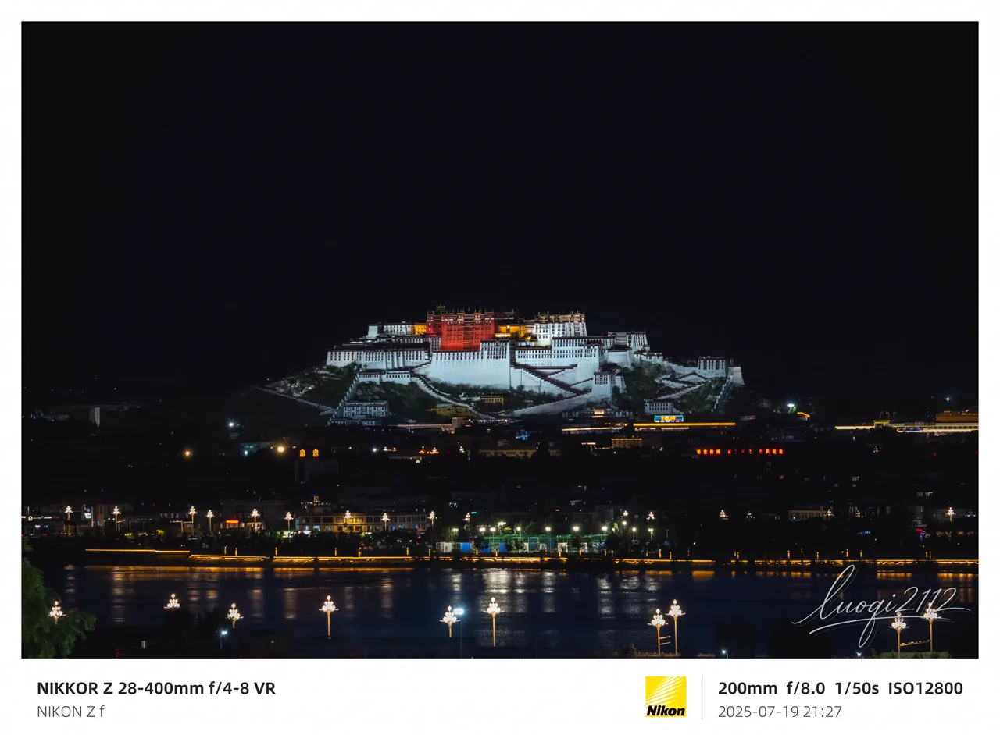
四十分钟后，夜色彻底合拢，灯光把整座布达拉宫托浮在黑蓝色的夜空下。
NAMTSO · JULY 20
末日云下，扎根高原的人
没遇到晴朗的明信片蓝，却在风暴边缘遇见在这里工作多年、终于迎来远方家人的工程队员。
纳木错是这条线上名气最响的一站，那天却没遇上晴朗的风景，反倒是末日般厚重的乌云从天边一路碾压过来，湖水在风里翻出冷硬的光。
在岸边顺手帮一位工程队大叔和他的家人拍了几张合影。他在西藏干工程已经很多年，这一次，家人专程从内地赶来看他。按下快门那一刻忽然觉得，我们追着风景一路路过的高原，背后站着无数这样默默扎根多年的普通人——比起湖水与雨云，那张定格在风里的笑脸更有分量。
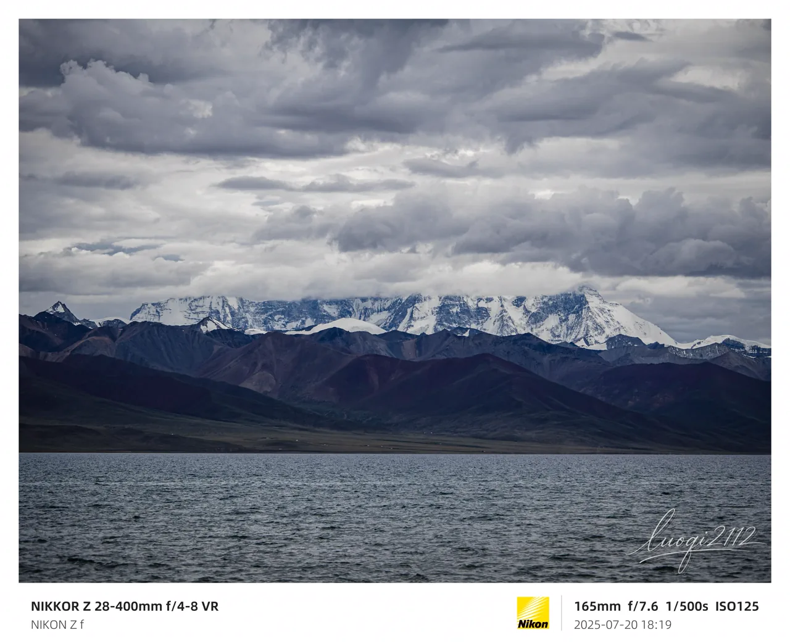
末日般的雨云从天边压过来，湖面在几分钟内沉成了凛冽的铁灰色。
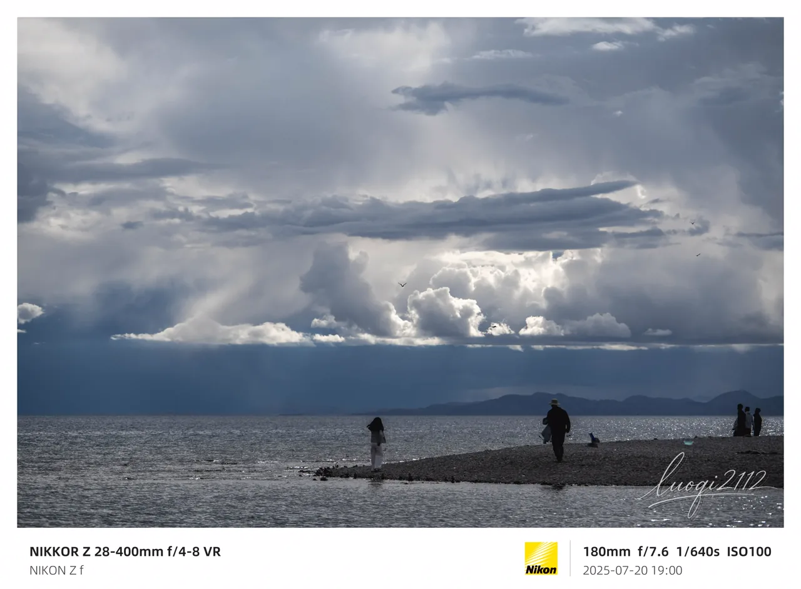
大雨落下前的最后一点缝隙，风卷着寒气扑在脸上。
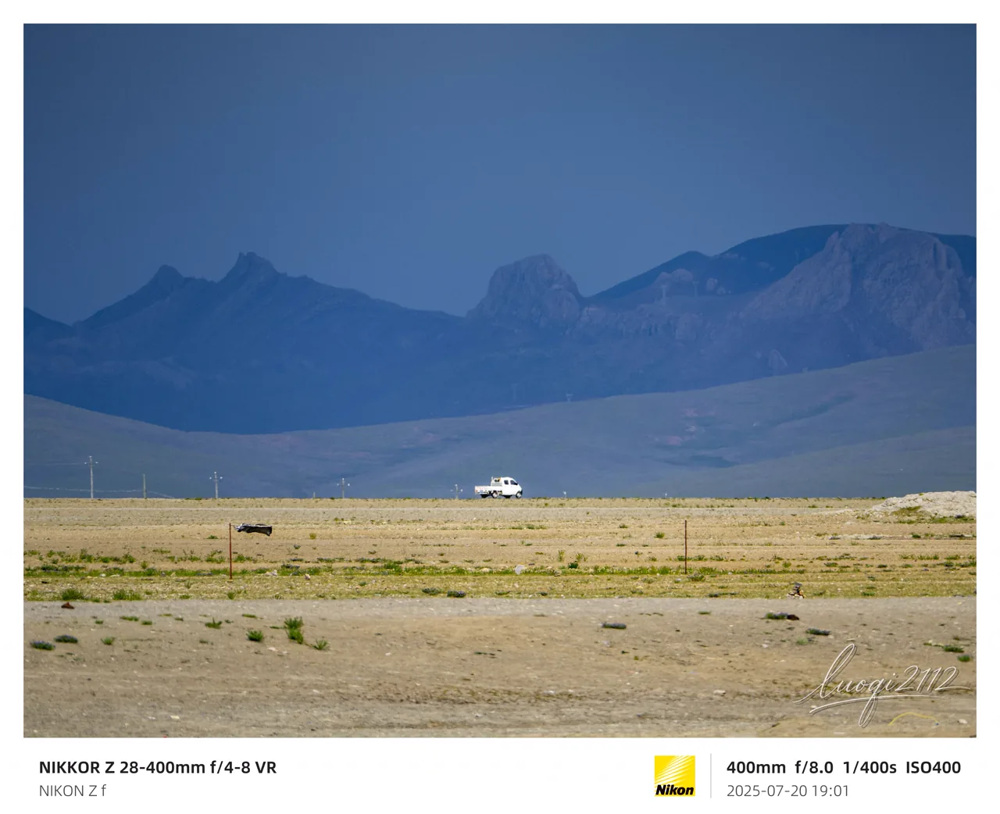
长焦拉近对岸雪山，浓厚的云脚已经垂进了水里。
BUGIA GLACIER · JULY 22
奶油河与十五元的野性下午
藏北未雕琢的冰舌脚下，15 元一张的车票把路直接铺到奶白色的融水溪畔。
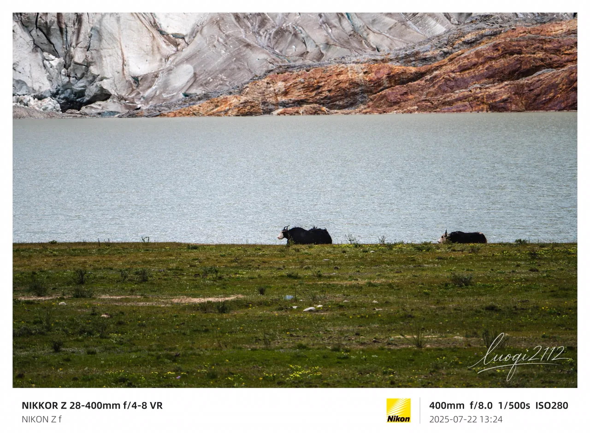
400mm 长焦压出的空间感：亿万年的冰舌悬在山谷，几头牦牛慢悠悠踱过湖岸，十五块钱换来整个下午的旷野。
拐进藏北的布加冰川时，这里还没被雕琢成标准景区：栈道只修了一半，入口是个简陋的小亭子，当地村民收了十五块钱一辆车，就能直接把车开到冰湖跟前。
湖边岔开几条河，最宽的那条带着冰川融水的岩粉，呈现出一种不可思议的奶油乳白色，完全不像正常的河；旁边细溪却清澈见底，贴着又矮又嫩、恨不得直接躺上去的茂盛草甸淌过去——溪水里居然还时不时顺流漂来几瓶不知哪儿来的可乐雪碧，看得人啼笑皆非，到底没敢捡起来喝。岸边不远处，几户牧民正支着高压锅在冰川脚下野餐，热气腾腾地多半炖着牦牛肉。
SERTAR · JULY 26
群山深处的金色桃花源
沿 G317 东返拐进山谷：白天粗粝密集，直到夜里九点灯光亮起才显现金色秩序。
沿 G317 东返拐进色达，扑面而来的是巨大的惊诧——很难想象在群山褶皱深处，藏着这样一座仿佛自成一界的红房子山谷，强烈得近乎异域。
白天走在坡道上，看到的还是略显粗粝的木屋与日常；一直耐着性子等到晚上将近九点、整片山谷的万千灯火次第亮起，才放无人机升上夜空。那一刻俯瞰下去，像闯进了一片浮在高原黑夜里的金色桃花源，奇异而安静。
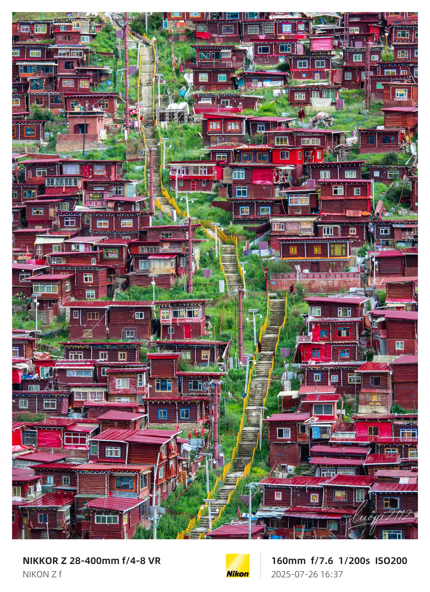
下午四点半，红屋顺着陡峭山势铺天盖地叠上去。
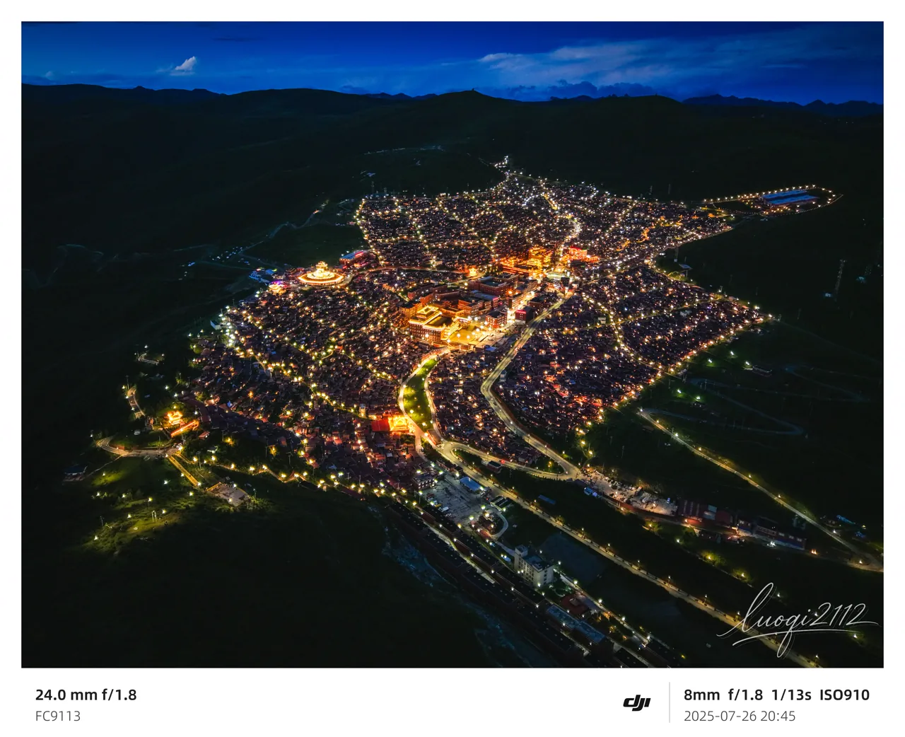
晚上八点四十五分起飞。等到亮灯这一刻，整片山谷才显出金色佛国般的梦幻秩序。
WENCHUAN · JULY 29
多难兴邦，回到人间
起点在大邑的建川博物馆聚落，四千六百公里之后的最后一站，又停在汶川。
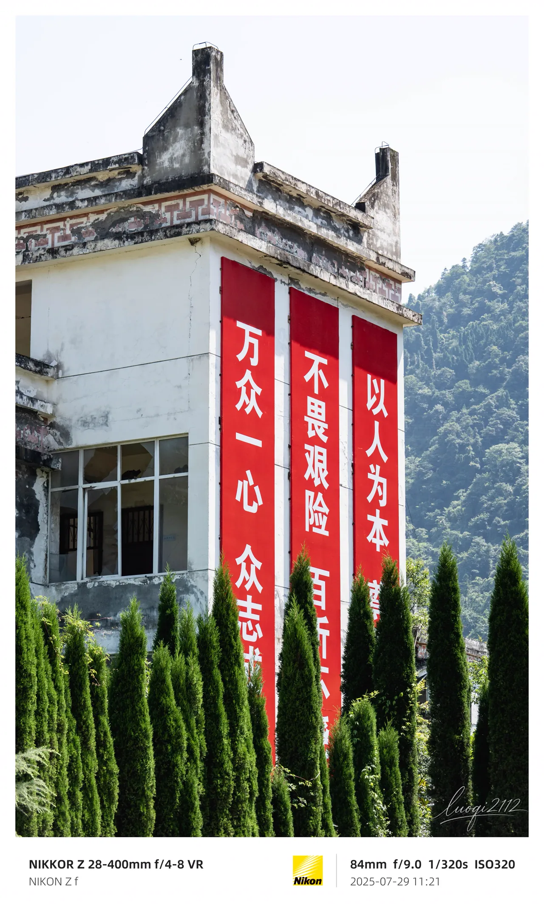
7 月 29 日中午，从群山驶回河谷。四千六百八十四公里在此收束，和出发那天的大邑首尾相接，然后回成都。
二十一天前，从成都出发走进的第一站，是大邑的建川博物馆聚落；兜过四千六百多公里、翻越整个高原再降回岷江河谷，最后一站，又停在了汶川的遗址与建川博物馆汶川馆。一首一尾，冥冥中画了一个完整的圆。
站在映秀的遗址和纪念馆里，所有轻飘飘的感叹都会失语，胸口反复涌上来的只有一句话：2008 年的中国，多难兴邦，我们是一个伟大的民族。在这里，你能最直白地触摸到中华民族最真挚滚烫的情感，看见当地基层党组织惊人的组织力，也看见一片破碎的家园如何以不可思议的速度重新站立。感谢樊建川先生，替这个时代把这些记忆牢牢留了下来。
多难兴邦，我们是一个伟大的民族。
TO BE CONTINUED · END OF ROLL 01
从成都出发，
回到成都。
从大邑到汶川，从刺眼的塔公紫外线到拉萨门后的满城灯火，二十一天，四千六百八十四公里。这辆黑色 Model Y 一路稳稳扛过所有烂路与海拔，把那整个滚烫的七月留在了底片里。
查看全部摄影作品